Compte rendu fédéral
À Niort, nous avons rendu hommage à Missak et Mélinée Manouchian et à leurs camarades
Date indiquée par Facebook · 21 février 2024
Repères éditoriaux
Le 21 février, le PCF 79, la CGT 79 et l’ADIRP ont appelé à honorer la Résistance communiste et étrangère à Niort. Notre compte rendu fait état de près de 200 personnes. Le même jour, Missak et Mélinée Manouchian sont entrés au Panthéon.
Texte conservé avec la publication
Hommage à Missak Manouchian et aux 23 de l'affiche rouge à Niort.
Malgré des conditions météorologiques peu favorables, qui avaient contraint à sortir les parapluies, près de 200 personnes ont participé à cet hommage.
Ce 21 février 2024, Missak Manouchian et son épouse Mélinée sont entrés au Panthéon, quatre vingts ans après avoir été fusillé par les nazis. Avec eux, c'est toute la Résistance communiste et étrangère qui se voit honorée, et toutes celles et tous ceux qui se sont battus contre le fascisme, pour leurs idéaux de paix et de justice, guidés par cet idéal de liberté, d'égalité, de fraternité. Tous combattants de l'Internationale.
A l'appel du Parti communiste en Deux-Sèvres, de la CGT79 et de l'ADIRP (Association des Déportés Internés Résistants Patriotes) un émouvant hommage a été rendu au pied du monument aux soldats sans uniforme place des martyrs de la Résistance à Niort, à l'heure où Missak Manouchian entrait au Panthéon.
Dans leurs interventions, le secrétaire départemental du PCF, le secrétaire de l'union départementale CGT et le président de l'ADIRP ont rappelé le rôle de ces résistants communistes et étrangers, cégétistes, qui ont versé leur sang pour libérer la France de la barbarie nazie. Ils étaient Français, Polonais, Hongrois, Espagnol, Italien, Arménien, avec l'internationalisme rivé au coeur avant tout. La soirée s'est terminée dans les locaux du PCF où était dressée une exposition sur le groupe Manouchian et les FTP-MOI ( Francs-tireurs et partisans - Main-d'œuvre immigrée).
Lors de la cérémonie d'hommage, la chorale niortaise "Y'en a marre" a magnifiquement interprété plusieurs chants dont L'affiche rouge, Nuits et Brouillards, Le chiffon rouge ...
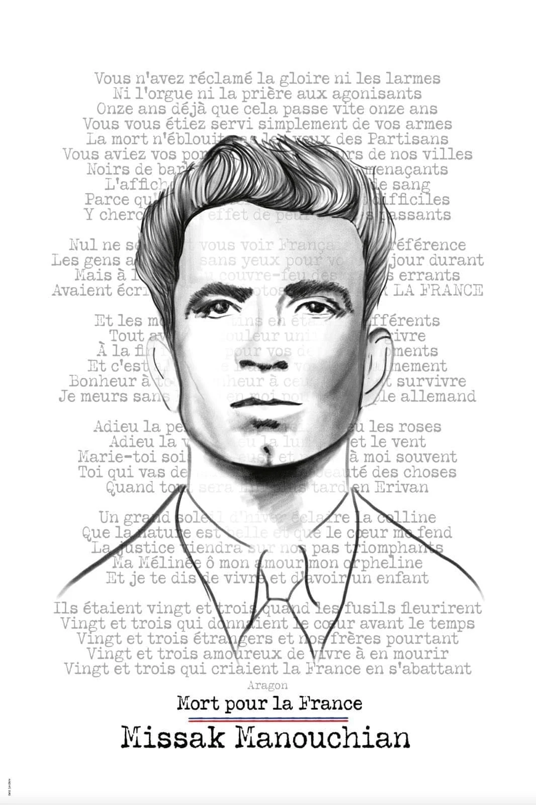
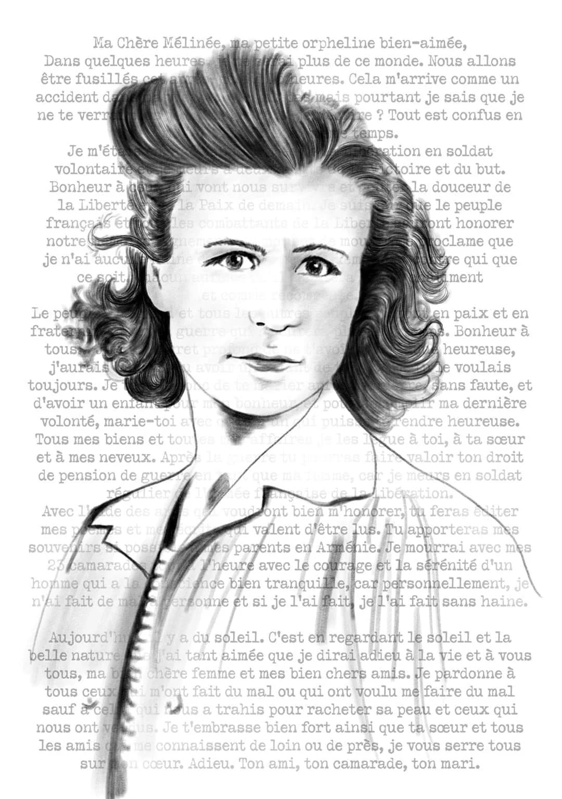
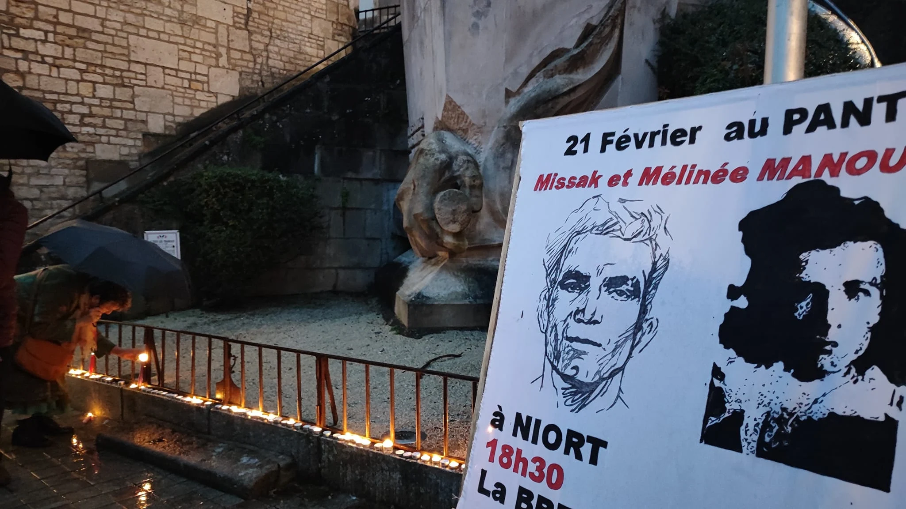
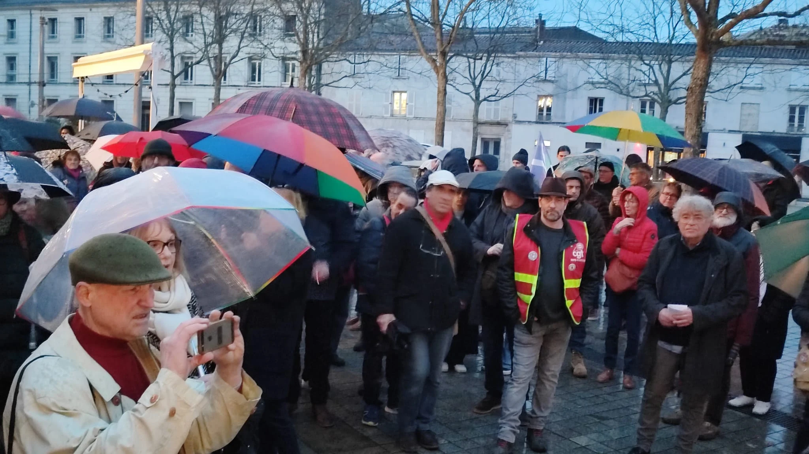
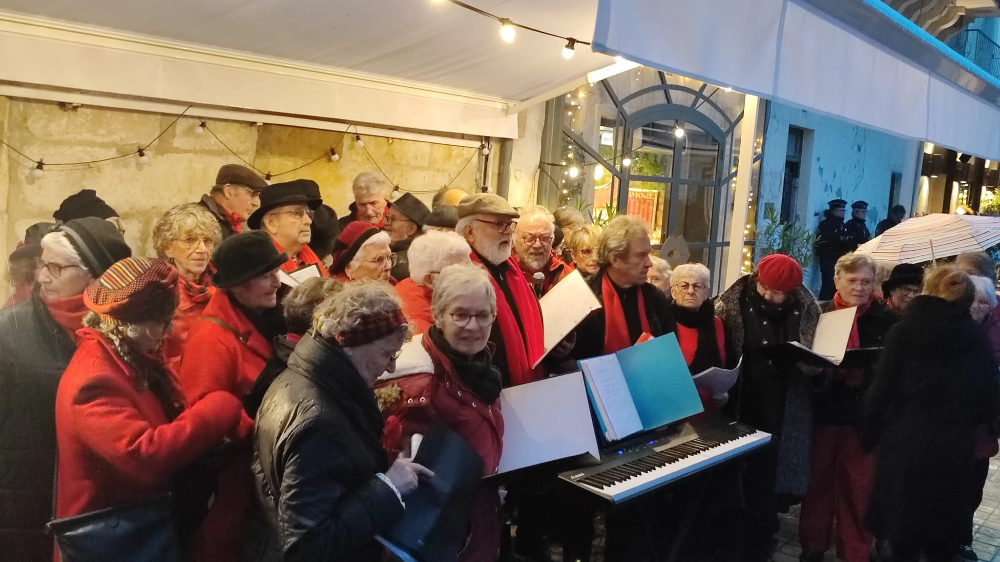
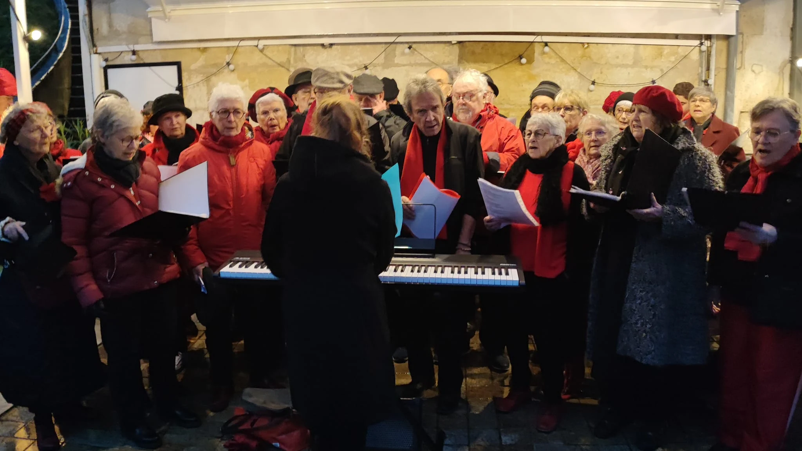
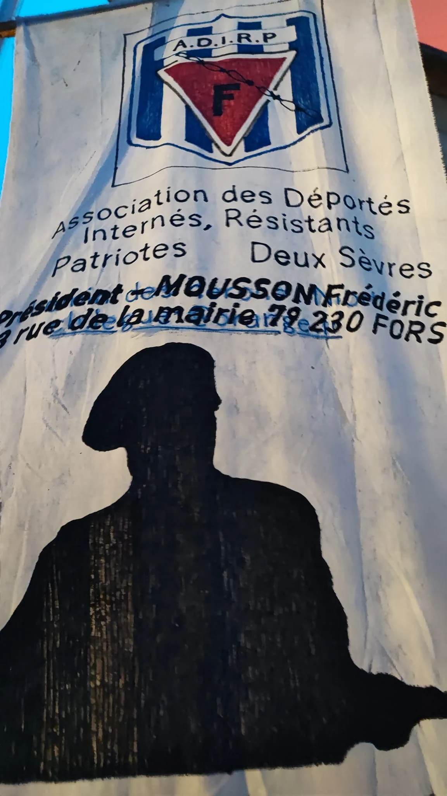
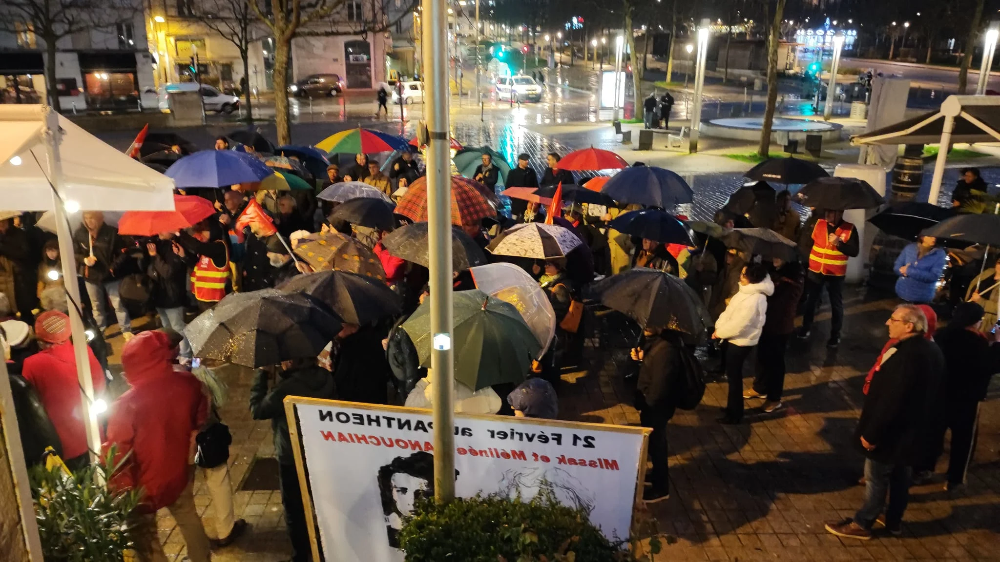
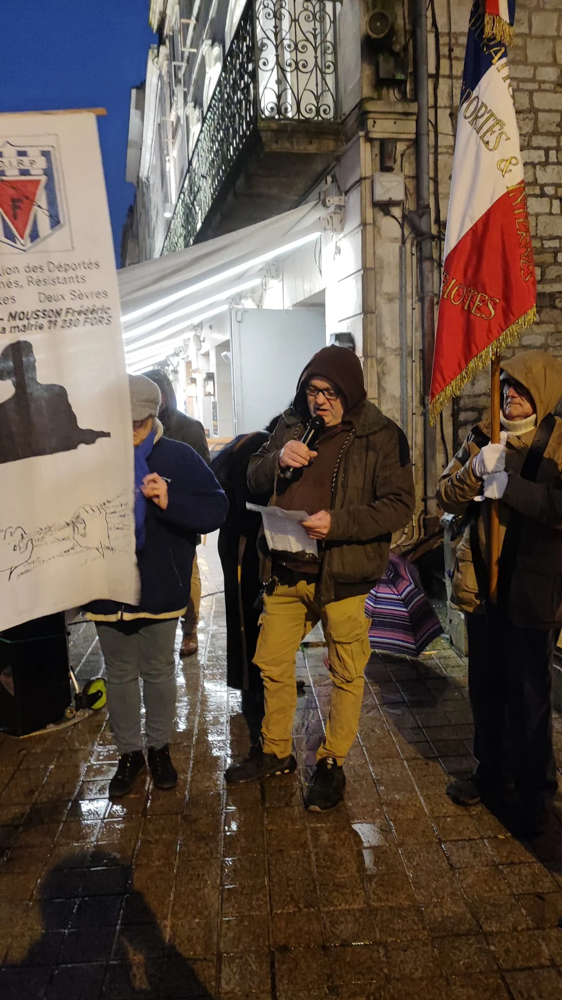
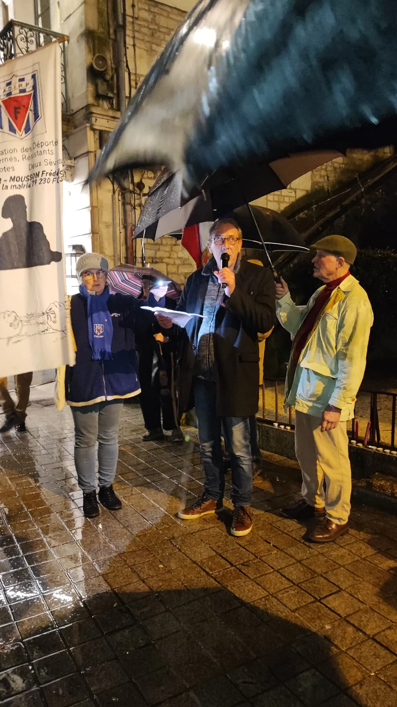
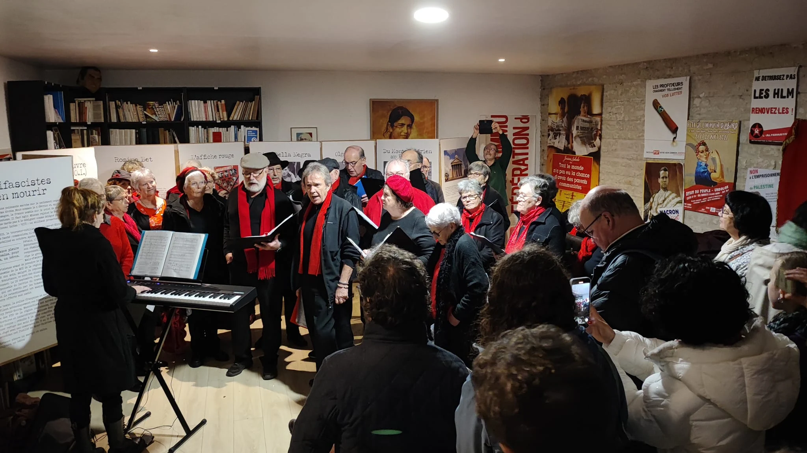
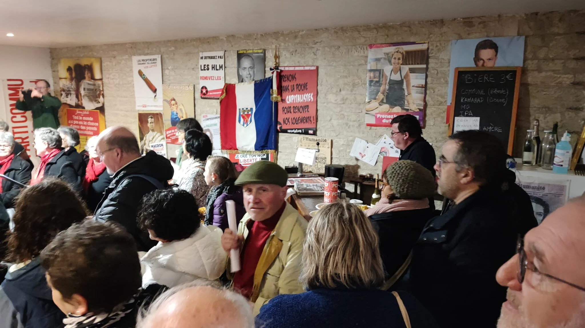
Sources
Archive rouge · export Facebook · AR-0002-FB-01470
À lire aussi · L’hommage à Missak et Mélinée Manouchian à Niort en vidéo